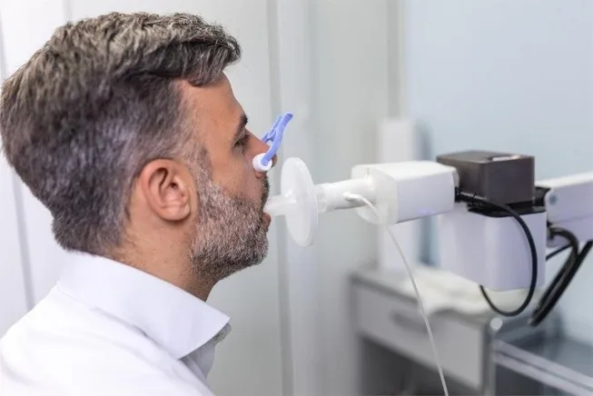

Espirometría
Es la principal prueba funcional en neumología: de forma sencilla, no invasiva e indolora permite conocer cómo funcionan los pulmones. Evalúa la capacidad pulmonar midiendo tanto la cantidad de aire que se puede movilizar como la velocidad con que se hace. Es una herramienta de gran valor para el diagnóstico y seguimiento de enfermedades respiratorias crónicas, y también en el estudio de patologías extrapulmonares.
¿Qué mide? · Parámetros principales
Valores normales
Interpretación
También puede realizarse con broncodilatador para evaluar reversibilidad (asma).
Cuidados de enfermería
Antes
Verificar identidad y antecedentes; explicar objetivo y técnica del esfuerzo máximo; suspender broncodilatadores si el médico lo indicó; comprobar que no haya fumado, hecho ejercicio intenso ni comido en abundancia; usar ropa cómoda.
Durante
Colocar al paciente sentado y pinza nasal; asegurar buen sellado de labios en la boquilla; guiar inspiración profunda y espiración rápida, fuerte y sostenida; lograr al menos 3 maniobras aceptables; vigilar mareo, fatiga o disnea.
Después
Valorar estado general y permitir descanso si hay mareo; administrar broncodilatador si está indicado (prueba post) y observar reacciones; confirmar maniobras adecuadas, registrar mejores valores y orientar la reanudación de actividades.